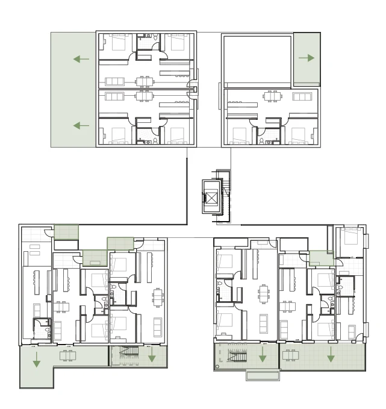

Chapter 04 / Development
A change in programme, a continuing inquiry
The transition from civic façades to housing retained an interest in occupied edges, climate and resident agency.

Responding to critique through a change in organisation
The record of the October feedback identifies a challenge to the project’s conceptual and architectural strength. My documented response was to select inhabited-threshold access as a direction for further development. Read retrospectively, the significant issue is whether this decision changes the organisation of the housing, rather than only its appearance. A stronger image would not, by itself, explain how residents enter, meet, withdraw or share space. [R113]
The inhabited route brings the project’s argument into circulation. It asks whether access can also provide a recognisable address and a place to pause. This creates a useful tension: the route must remain usable by someone who wants to pass through without participating. An inhabited gallery should not require residents to negotiate a social encounter every time they leave home. The proposal therefore has to accommodate both occupation and bypass. [R112–R113]
A counterfactual comparison would make this decision more rigorous. I propose to compare a conventional access arrangement with the inhabited-threshold arrangement while holding the site, building height and dwelling assumptions constant. I would compare route lengths, privacy at front doors, area allocated to movement and opportunities to pause. Any loss of efficiency needs to be made visible alongside the spatial benefit being claimed. This comparison has not been verified in the evidence reviewed for this draft, so I cannot yet present it as the reason one option performed better.
Draft basis: R113; feedback is user-reported, without a tutor transcript. R111–R114 establish the documented design sequence.
What the change of programme retained—and what it left behind
The journal should make the discontinuities in the project visible. The programme of a façade research centre did not survive the housing pivot unchanged. Neither should the earlier public audience or technical propositions be retrospectively presented as if they had always described housing. What remains relevant is an interest in environmental edges, occupation and the capacity of people to adjust their immediate surroundings. [R111]
The later work introduces questions that require different evidence: connections between households, the distinction between private and shared outdoor territory, and the relationship between massing and access. The sequence of references and adjacency studies records a developing direction, but it does not yet demonstrate that every option was evaluated. To make the Learning Journal credible, I need to retain rejected drawings and explain the trade-off that led to the next version, including decisions that remain unresolved. [R114, R116–R118]
Draft basis: R111; reconstructed chronology. R114 and R116–R118 record later design directions.